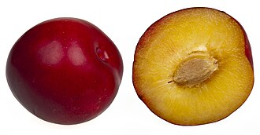

すももの生産量 都道府県ランキング
全9都道府県の順位と収穫量
すももの収穫量が全国で最も多いのは山梨県で、5,090 tです。全国（1万6,400 t）の31%を占めます。

| 順位 | 都道府県 | 収穫量 | 全国に占める割合 |
|---|---|---|---|
| 1位 | 山梨県 | 5,090 t | 31% |
| 2位 | 長野県 | 2,850 t | 17% |
| 3位 | 山形県 | 2,180 t | 13% |
| 4位 | 和歌山県 | 1,260 t | 7.7% |
| 5位 | 青森県 | 841 t | 5.1% |
| 6位 | 北海道 | 813 t | 5.0% |
| 7位 | 福島県 | 624 t | 3.8% |
| 8位 | 大分県 | 172 t | 1.0% |
| 9位 | 鹿児島県 | 93 t | 0.6% |
すももの生産量の推移（令和2年産〜令和6年産）
全国の収穫量は、令和2年産の1万6,500 tから令和6年産の1万6,400 tへ、ほとんど変わっていません。期間中、1位は一貫して山梨県です。
| 年 | 全国 | 1位 | 2位 | 3位 |
|---|---|---|---|---|
| 令和6年産 | 1万6,400 t | 山梨県5,090 t | 長野県2,850 t | 山形県2,180 t |
| 令和5年産 | 1万7,100 t | 山梨県5,690 t | 長野県2,260 t | 和歌山県2,080 t |
| 令和4年産 | 1万8,800 t | 山梨県5,940 t | 長野県3,070 t | 山形県2,080 t |
| 令和3年産 | 1万8,800 t | 山梨県6,680 t | 長野県2,590 t | 和歌山県2,130 t |
| 令和2年産 | 1万6,500 t | 山梨県5,320 t | 長野県2,510 t | 山形県1,810 t |
この数字について
- 分類：バラ科
- 全国の収穫量：1万6,400 t
- この数字が表すもの：収穫量（収穫された重量）
- 調査：作物統計調査 作況調査（果樹） 令和6年産
- 9県分を調査（調査していない県は順位に入りません）
すももの生産量について、よくある質問
- すももの生産量が日本一の都道府県はどこですか？
- 山梨県です。作物統計調査 作況調査（果樹）（令和6年産）で5,090 tでした。
- すももの生産量ランキング2位・3位はどこですか？
- 2位は長野県（2,850 t）、3位は山形県（2,180 t）です。
- すももの生産量ランキング4位・5位はどこですか？
- 4位は和歌山県（1,260 t）、5位は青森県（841 t）です。すももの全9県の順位は上の表のとおりです。
- すももの全国の生産量はどれくらいですか？
- 1万6,400 t（令和6年産）です。